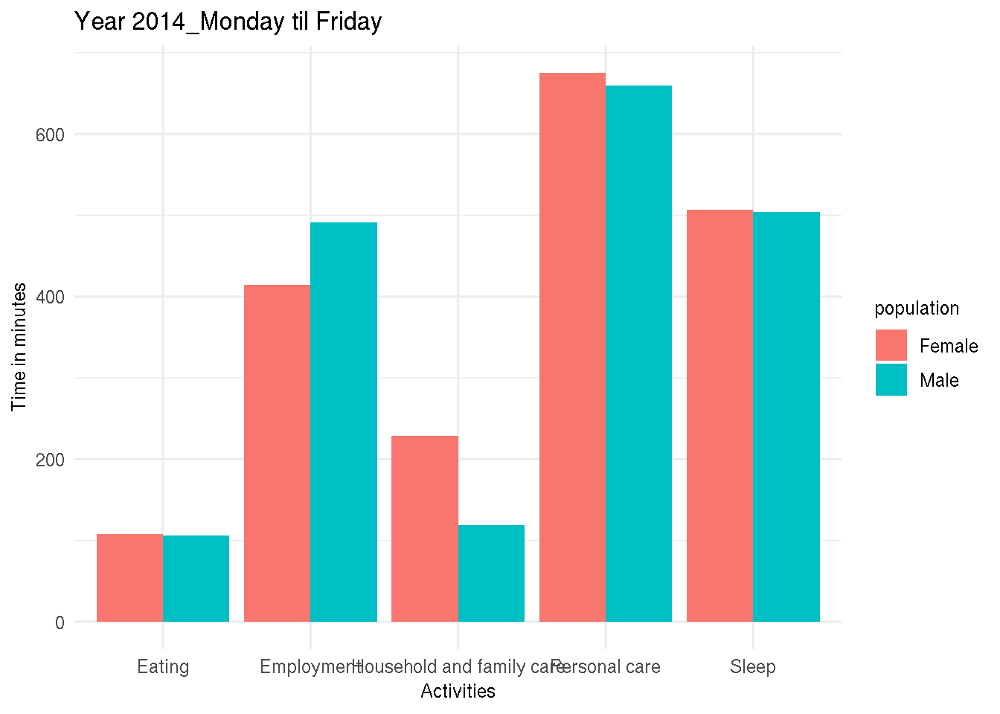
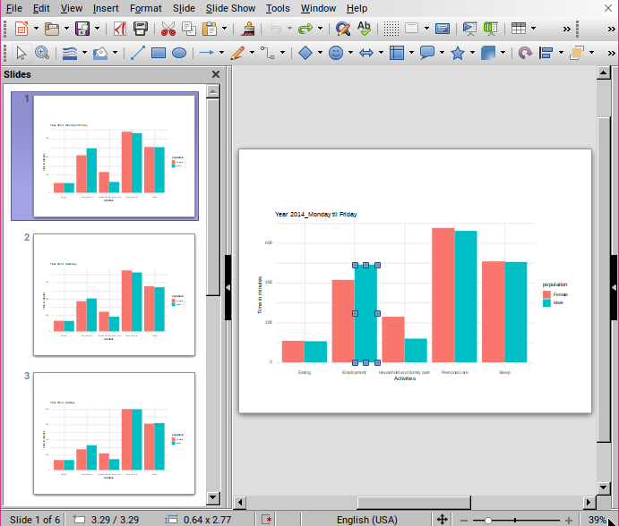

Exporting editable plots from R to Powerpoint: making ggplot2 purrr with officer
October 5, 2018

A kind reader let me know that the function create_pptx() is now outdated, and
proposed an update which you can find here:
here.
Thank you
@Jeremy!
I was recently confronted to the following problem: creating hundreds of plots that could still be edited by our client. What this meant was that I needed to export the graphs in Excel or Powerpoint or some other such tool that was familiar to the client, and not export the plots directly to pdf or png as I would normally do. I still wanted to use R to do it though, because I could do what I always do to when I need to perform repetitive tasks such as producing hundreds of plots; map over a list of, say, countries, and make one plot per country. This is something I discussed in a previous blog post, Make ggplot2 purrr.
So, after some online seaching, I found the {officer} package. This package allows you to put
objects into Microsoft documents. For example, editable plots in a Powerpoint document. This is what
I will show in this blog post.
Let’s start by loading the required packages:
library("tidyverse")
library("officer")
library("rvg")Then, I will use the data from the time use survey, which I discussed in a previous blog post Going from a human readable Excel file to a machine-readable csv with {tidyxl}.
You can download the data here.
Let’s import and prepare it:
time_use <- rio::import("clean_data.csv")
time_use <- time_use %>%
filter(population %in% c("Male", "Female")) %>%
filter(activities %in% c("Personal care", "Sleep", "Eating",
"Employment", "Household and family care")) %>%
group_by(day) %>%
nest()I only kept two categories, “Male” and “Female” and 5 activities. Then I grouped by day and nested the data. This is how it looks like:
time_use## # A tibble: 3 x 2
## day data
## <chr> <list>
## 1 Year 2014_Monday til Friday <tibble [10 × 4]>
## 2 Year 2014_Saturday <tibble [10 × 4]>
## 3 Year 2014_Sunday <tibble [10 × 4]>As shown, time_use is a tibble with 2 columns, the first day contains the days, and the second
data, is of type list, and each element of these lists are tibbles themselves. Let’s take a look
inside one:
time_use$data[1]## [[1]]
## # A tibble: 10 x 4
## population activities time time_in_minutes
## <chr> <chr> <chr> <int>
## 1 Male Personal care 11:00 660
## 2 Male Sleep 08:24 504
## 3 Male Eating 01:46 106
## 4 Male Employment 08:11 491
## 5 Male Household and family care 01:59 119
## 6 Female Personal care 11:15 675
## 7 Female Sleep 08:27 507
## 8 Female Eating 01:48 108
## 9 Female Employment 06:54 414
## 10 Female Household and family care 03:49 229I can now create plots for each of the days with the following code:
my_plots <- time_use %>%
mutate(plots = map2(.y = day, .x = data, ~ggplot(data = .x) + theme_minimal() +
geom_col(aes(y = time_in_minutes, x = activities, fill = population),
position = "dodge") +
ggtitle(.y) +
ylab("Time in minutes") +
xlab("Activities")))These steps are all detailled in my blog post
Make ggplot2 purrr.
Let’s take a look at my_plots:
my_plots## # A tibble: 3 x 3
## day data plots
## <chr> <list> <list>
## 1 Year 2014_Monday til Friday <tibble [10 × 4]> <gg>
## 2 Year 2014_Saturday <tibble [10 × 4]> <gg>
## 3 Year 2014_Sunday <tibble [10 × 4]> <gg>The last column, called plots is a list where each element is a plot! We can take a look at one:
my_plots$plots[1]## [[1]]
Now, this is where I could export these plots as pdfs or pngs. But this is not what I need. I need
to export these plots as editable charts for Powerpoint. To do this for one image, I would do the
following (as per {officer}’s documentation):
read_pptx() %>%
add_slide(layout = "Title and Content", master = "Office Theme") %>%
ph_with_vg(code = print(one_plot), type = "body") %>%
print(target = path)To map this over a list of arguments, I wrote a wrapper:
create_pptx <- function(plot, path){
if(!file.exists(path)) {
out <- read_pptx()
} else {
out <- read_pptx(path)
}
out %>%
add_slide(layout = "Title and Content", master = "Office Theme") %>%
ph_with_vg(code = print(plot), type = "body") %>%
print(target = path)
}This function takes two arguments, plot and path. plot must be an plot object such as the ones
contained inside the plots column of my_plots tibble. path is the path of where I want to save
the pptx.
The first lines check if the file exists, if yes, the slides get added to the existing file, if not
a new pptx gets created. The rest of the code is very similar to the one from the documentation. Now,
to create my pptx I simple need to map over the plots column and provide a path:
map(my_plots$plots, create_pptx, path = "test.pptx")## Warning in doc_parse_file(con, encoding = encoding, as_html = as_html,
## options = options): Failed to parse QName 'xsi:xmlns:' [202]
## Warning in doc_parse_file(con, encoding = encoding, as_html = as_html,
## options = options): Failed to parse QName 'xsi:xmlns:' [202]
## Warning in doc_parse_file(con, encoding = encoding, as_html = as_html,
## options = options): Failed to parse QName 'xsi:xmlns:' [202]
## Warning in doc_parse_file(con, encoding = encoding, as_html = as_html,
## options = options): Failed to parse QName 'xsi:xmlns:' [202]
## Warning in doc_parse_file(con, encoding = encoding, as_html = as_html,
## options = options): Failed to parse QName 'xsi:xmlns:' [202]
## Warning in doc_parse_file(con, encoding = encoding, as_html = as_html,
## options = options): Failed to parse QName 'xsi:xmlns:' [202]
## Warning in doc_parse_file(con, encoding = encoding, as_html = as_html,
## options = options): Failed to parse QName 'xsi:xmlns:' [202]
## Warning in doc_parse_file(con, encoding = encoding, as_html = as_html,
## options = options): Failed to parse QName 'xsi:xmlns:' [202]
## Warning in doc_parse_file(con, encoding = encoding, as_html = as_html,
## options = options): Failed to parse QName 'xsi:xmlns:' [202]## [[1]]
## [1] "/home/cbrunos/Documents/b-rodrigues.github.com/content/blog/test.pptx"
##
## [[2]]
## [1] "/home/cbrunos/Documents/b-rodrigues.github.com/content/blog/test.pptx"
##
## [[3]]
## [1] "/home/cbrunos/Documents/b-rodrigues.github.com/content/blog/test.pptx"Here is the end result:

Inside Powerpoint (or in this case Libreoffice), the plots are geometric shapes that can now be edited!
If you found this blog post useful, you might want to follow me on twitter for blog post updates.